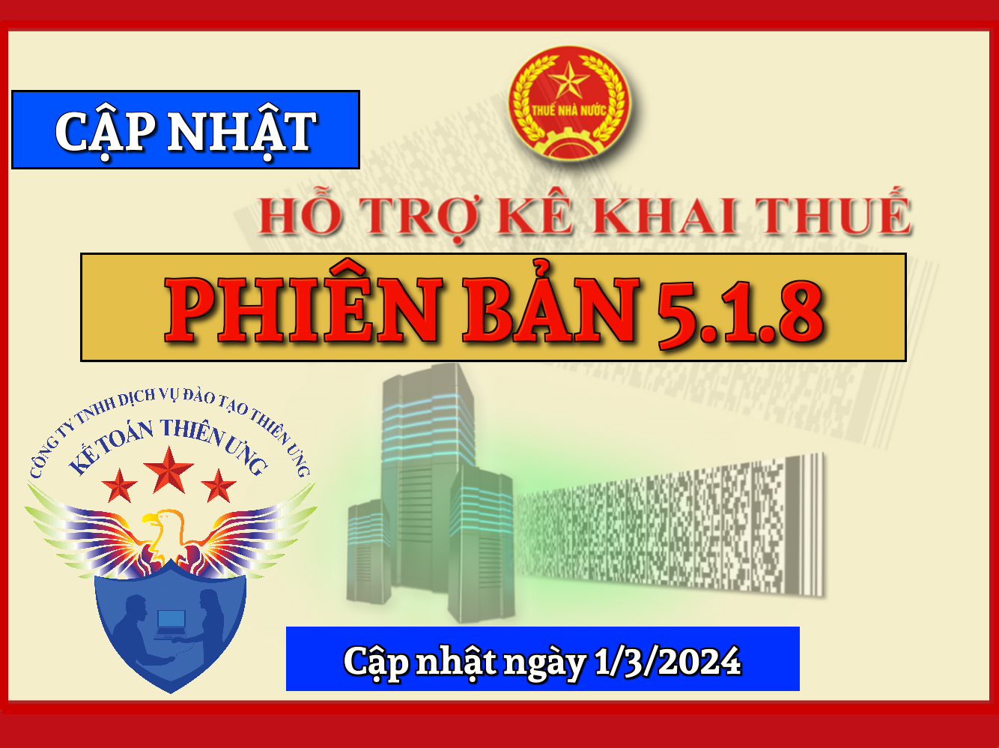
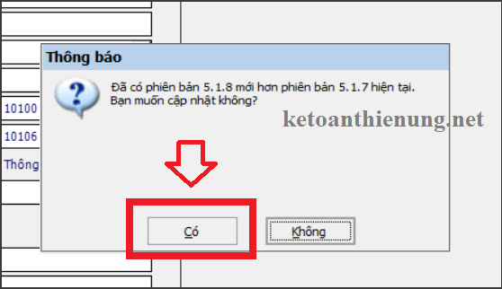
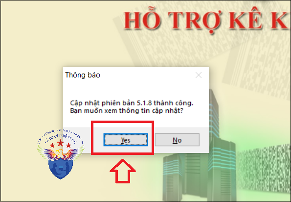

Phần mềm hỗ trợ kê khai thuế HTKK 5.1.8 mới nhất 2024 là Phần mềm HTKK mới nhất ngày 1/3/2024 của Tổng cục thuế. Download phần mềm HTKK 5.1.8 miễn phí tại đây.
Ngày 2/3/2024 Tổng cục Thuế thông báo về việc Nâng cấp ứng dụng Hỗ trợ kê khai (HTKK) 5.1.8
TỔNG CỤC THUẾ THÔNG BÁO
V/v Nâng cấp ứng dụng Hỗ trợ kê khai (HTKK) phiên bản 5.1.8 cập nhật địa bàn hành chính thuộc tỉnh Thanh Hóa, Bắc Giang và nâng cấp một số nội dung phát sinh
Tổng cục Thuế thông báo nâng cấp ứng dụng Hỗ trợ kê khai (HTKK) phiên bản 5.1.8 cập nhật địa bàn hành chính thuộc tỉnh Thanh Hóa, Bắc Giang và nâng cấp một số nội dung phát sinh trong quá trình triển khai HTKK 5.1.7, cụ thể như sau:
A. Cập nhật địa bàn hành chính tỉnh Bắc Giang đáp ứng Nghị Quyết số 938/NQ-UBTVQH15
- Đổi tên Huyện Việt Yên thành Thị xã Việt Yên (mã 22117).
- Đổi tên các Xã/phường/Thị trấn thuộc Thị xã Việt Yên như sau:
- Đổi tên các Xã/phường/Thị trấn thuộc Thị xã Việt Yên như sau:
+ Đổi tên Thị trấn Bích Động thành Phường Bích Động (mã 2211701)
+ Đổi tên Thị trấn Nếnh thành Phường Nếnh (mã 2211703)
+ Đổi tên Xã Tăng Tiến thành Phường Tăng Tiến (mã 2211717)
+ Đổi tên Xã Hồng Thái thành Phường Hồng Thái (mã 2211715)
+ Đổi tên Xã Quảng Minh thành Phường Quảng Minh (mã 2211719)
+ Đổi tên Xã Ninh Sơn thành Phường Ninh Sơn (mã 2211721)
+ Đổi tên Xã Vân Trung thành Phường Vân Trung (mã 2211723)
+ Đổi tên Xã Quang Châu thành Phường Quang Châu (mã 2211725)
+ Đổi tên Xã Tự Lạn thành Phường Tự Lạn (mã 2211733)
+ Đổi tên Thị trấn Nếnh thành Phường Nếnh (mã 2211703)
+ Đổi tên Xã Tăng Tiến thành Phường Tăng Tiến (mã 2211717)
+ Đổi tên Xã Hồng Thái thành Phường Hồng Thái (mã 2211715)
+ Đổi tên Xã Quảng Minh thành Phường Quảng Minh (mã 2211719)
+ Đổi tên Xã Ninh Sơn thành Phường Ninh Sơn (mã 2211721)
+ Đổi tên Xã Vân Trung thành Phường Vân Trung (mã 2211723)
+ Đổi tên Xã Quang Châu thành Phường Quang Châu (mã 2211725)
+ Đổi tên Xã Tự Lạn thành Phường Tự Lạn (mã 2211733)
B. Cập nhật địa bàn hành chính tỉnh Thanh Hóa đáp ứng Nghị Quyết số 939/NQ-UBTVQH15
- Cập nhật địa bàn hành chính thuộc Huyện Thiệu Hoá như sau:
+ Cập nhật hết hiệu lực Xã Thiệu Phú (mã 4014131)
+ Đổi tên Xã Minh Tâm thành Thị trấn Hậu Hiền (mã 4014163)
+ Đổi tên Xã Minh Tâm thành Thị trấn Hậu Hiền (mã 4014163)
C. Nâng cấp mẫu Báo cáo sử dụng hóa đơn –mẫu 01/BC-SDHĐ-CNKD
- Nâng cấp cho phép kê khai loại tờ khai bổ sung đối với mẫu 01/BC-SDHĐ-CNKD
D. Nâng cấp Tờ khai thuế bảo vệ môi trường – mẫu 01/TBVMT (TT156/2013)
- Cập nhật tổng hợp đúng dữ liệu Tăng/giảm số thuế phải nộp trên 01/KHBS
E. Nâng cấp Tờ khai quyết toán thuế tài nguyên – mẫu 02/TAIN (TT80/2021)
- Cập nhật khi mở lại tờ khai đã khai thì không cho phép sửa chỉ tiêu “Thuế suất” (theo như ràng buộc khai tờ khai mới)
F. Nâng cấp Tờ khai quyết toán phí, lệ phí và các khoản thu khác do cơ quan đại diện nước Cộng hòa xã hội Chủ nghĩa Việt Nam ở nước ngoài thực hiện thu – mẫ 02/PHLPNG (TT80/2021)
- Cập nhật tính đúng giá trị Tổng cộng (theo từng loại phí, lệ phí và các khoản thu khác) khi tải bảng kê 02-1/PHLPNG lên ứng dụng
G. Nâng cấp Tờ khai thuế Giá trị gia tăng – mẫu 04/GTGT (TT80/2021), Tờ khai thuế Giá trị gia tăng – mẫu 01/GTGT (TT80/2021)
- Cập nhật tổng hợp đúng dữ liệu lên 01-1/KHBS khi không thay đổi giá trị trên PL_GiamThue_GTGT_23_24 đối với tờ khai 04/GTGT, trên PL 43/2022/QH15 đối với tờ khai 01/GTGT
H. Nâng cấp Văn bản đề nghị xử lý số tiền thuế, tiền chậm nộp, tiền phạt nộp thừa – mẫu 01/ĐNXLNT (TT80/2021)
- Cập nhật kết xuất XML đủ thông tin ct (9) Địa bàn hành chính tại mục III.1
I. Nâng cấp tờ khai thuế tiêu thụ đặc biệt – mẫu 01/TTĐB (TT80/2021)
- Cập nhật không báo đỏ khi chọn Tên hàng hóa, dịch vụ trong trường hợp kê khai danh mục ngành nghề Hoạt động sản xuất kinh doanh thông thường bao gồm Casino
---------------------------------------------------------------------
Bắt đầu từ ngày 2/3/2024, khi lập hồ sơ khai thuế có liên quan đến nội dung nâng cấp nêu trên, tổ chức, cá nhân nộp thuế sẽ sử dụng các chức năng kê khai tại ứng dụng HTKK 5.1.8 thay cho các phiên bản trước đây.

----------------------------------------------------------------------------
Download Phần mềm HTKK 5.1.8 tại đây:

Để cài đặt được HTKK 5.1.8, máy tính của NNT cần đáp ứng thông số sau:
- Hệ điều hành WinXP (SP2, SP3), Win 7 trở lên…
(không hỗ trợ hệ điều hành iOS, Mac).
- Máy tính có cài .NET Framework 3.5 trở lên
- Nếu máy tính sử dụng hệ điều hành Win 7 trở lên không phải cài đặt .NET Framework 3.5 mà chỉ cần kích hoạt .NET Framework 3.5 đã tích hợp sẵn theo tài liệu hướng dẫn cài đặt tại đây
-----------------------------------------------------------------------------------------------
- Nếu không tải về được các bạn liên hệ trực tiếp với cơ quan thuế địa phương để được cung cấp và hỗ trợ trong quá trình cài đặt, sử dụng.
- Mọi phản ánh, góp ý của tổ chức, cá nhân nộp thuế được gửi đến cơ quan Thuế theo các số điện thoại, hộp thư điện tử hỗ trợ NNT về ứng dụng HTKK do cơ quan Thuế cung cấp.
Trường hợp: Máy tính các bạn đã cài phần mềm HTKK các phiên bản thấp hơn trước đó (Ví dụ như phiên bản HTKK 5.1.7 chẳng hạn)
=> Các bạn chỉ cần Bật phần mềm HTKK phiên bản cũ đó lên => Phần mềm sẽ hiển thị Thông báo cập nhật lên Phần mềm HTKK 5.1.8 => Các bạn bấm nút "Có".
=> Các bạn chỉ cần Bật phần mềm HTKK phiên bản cũ đó lên => Phần mềm sẽ hiển thị Thông báo cập nhật lên Phần mềm HTKK 5.1.8 => Các bạn bấm nút "Có".

=> Tiếp đó đợi phần mềm chạy cập nhật là xong nhé:

Như vậy là các bạn đã nâng cấp xong Phần mềm HTKK 5.1.8
nhé.
nhé.
------------------------------------------------------------------------
KẾ TOÁN DIỆU TÂM
Chúc các bạn cài đặt và nâng cấp phần mềm HTKK mới nhất thành công!
KẾ TOÁN DIỆU TÂM
Chúc các bạn cài đặt và nâng cấp phần mềm HTKK mới nhất thành công!